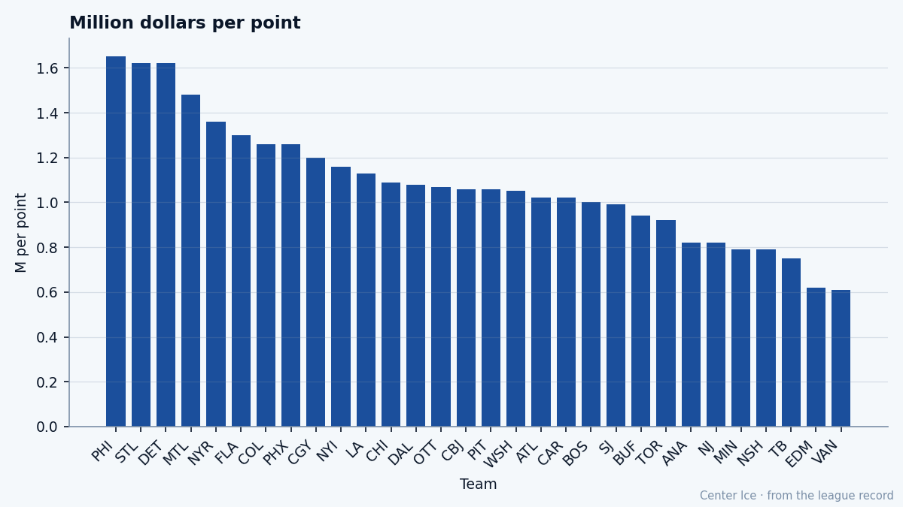

Letters to the editor
The Postbag: what $80.89 million buys in Dearborn, and what a cold streak costs in Nepean
Six readers. A heavy, a building, a pattern, a skid, a split, and a payroll.
Saturday, 15 January 2005 · edited by Tunde Oyelaran
Six letters this week. A man in Yonkers wants to know if fighting counts. A man in Verdun wants a pattern named. A man in Edmonton asks whether the building costs wins. A woman in Nepean is watching a streak eat her team. And one woman in Dearborn sent two, both about what it means to be the most expensive club in this league and the worst on the road. I printed them all. The record answers five of the six.
Matthew Barnaby80 — is he helping this team, or is he just a man who sits down a lot?
Aaron Lindqvist, Yonkers
59 penalty minutes in 44 games. That is the most in the league. Whether it helps depends on what you think a job is. The  New York Rangers are 21-16-5, sitting third in the
New York Rangers are 21-16-5, sitting third in the  Atlantic, and Matthew Barnaby has been on the ice for every one of those games. The record does not grade his forecheck, his backcheck, or his minutes in the defensive zone. It gives you 59 minutes in the box and a win-loss column. If those minutes keep a winger honest and free up
Atlantic, and Matthew Barnaby has been on the ice for every one of those games. The record does not grade his forecheck, his backcheck, or his minutes in the defensive zone. It gives you 59 minutes in the box and a win-loss column. If those minutes keep a winger honest and free up  Eric Lindros87 from one more shift of board battles, you have an argument. If they hand the other team 59 minutes of power play, you do not.
Eric Lindros87 from one more shift of board battles, you have an argument. If they hand the other team 59 minutes of power play, you do not.
We have played Ottawa 4 times and not beaten them once. At what point is that a pattern and not bad luck?
Philippe Deslauriers, Verdun
Four meetings, three regulation losses, one overtime loss. The  Montreal Canadiens sit last in the
Montreal Canadiens sit last in the  Northeast at 12-24-4, and Ottawa beat them in every meeting that counted. A pattern is four games against one opponent with zero wins. That is what you have. The wider record is worse: Montreal is 1-2-1 in overtime games overall and 5-17 on the road. This is a club problem that Ottawa happens to exploit.
Northeast at 12-24-4, and Ottawa beat them in every meeting that counted. A pattern is four games against one opponent with zero wins. That is what you have. The wider record is worse: Montreal is 1-2-1 in overtime games overall and 5-17 on the road. This is a club problem that Ottawa happens to exploit.
Does the state of this building actually cost us anything on the ice, or is that something people say?
Callum Fotheringay, Edmonton
The Bureau measures it.  Edmonton Oilers carries −3.65 on every man's overall rating from its facilities, the worst penalty in the league. Every player in that sweater walks onto the ice with a number that reads lower than it should, and the gap between his true talent and his effective rating is the building's fault. No other club comes close. The Oilers are 19-14-3 and sitting third in the
Edmonton Oilers carries −3.65 on every man's overall rating from its facilities, the worst penalty in the league. Every player in that sweater walks onto the ice with a number that reads lower than it should, and the gap between his true talent and his effective rating is the building's fault. No other club comes close. The Oilers are 19-14-3 and sitting third in the  Northwest despite that handicap, which means the players are clearing it on their own. A new rink does not make them a Cup team overnight, but it removes a tax that every other team in this division does not pay.
Northwest despite that handicap, which means the players are clearing it on their own. A new rink does not make them a Cup team overnight, but it removes a tax that every other team in this division does not pay.
7 straight losses. Is anybody at this club going to say something, or do we all just watch?
Genevieve Charbonneau, Nepean
 Ottawa Senators is 15-21-4 with 40 points in 43 games and 165 goals against. They sit 6 points behind the eighth-place team in the East, and the gap does not close by wishing. The last ten games read 2 wins and 8 losses, including the streak you are living through.
Ottawa Senators is 15-21-4 with 40 points in 43 games and 165 goals against. They sit 6 points behind the eighth-place team in the East, and the gap does not close by wishing. The last ten games read 2 wins and 8 losses, including the streak you are living through.  Patrick Lalime86 has a 3.68 GAA and an .837 save percentage, and he has carried the bulk of the workload at 35 starts. The Ottawa next meeting table shows them hosting
Patrick Lalime86 has a 3.68 GAA and an .837 save percentage, and he has carried the bulk of the workload at 35 starts. The Ottawa next meeting table shows them hosting  Mighty Ducks of Anaheim on January 16. That game does not fix a season. It stops the number from becoming 8.
Mighty Ducks of Anaheim on January 16. That game does not fix a season. It stops the number from becoming 8.
We are a different team on the road and nobody will say why. Is it the travel, or is it an excuse?
Ottilie Brandvold, Dearborn
17-6 at home. 6-15 away. Eleven games' worth of swing between the two halves of a schedule that is roughly equal in games played. That is the largest home-away split in this league. The  Detroit Red Wings are 18-17-4 and sitting sixth in the West, meaning nearly everything they have earned, they earned in their own building. The travel room is real, but it is not the whole answer. Detroit plays
Detroit Red Wings are 18-17-4 and sitting sixth in the West, meaning nearly everything they have earned, they earned in their own building. The travel room is real, but it is not the whole answer. Detroit plays  Chicago Blackhawks tonight at the United Center, where Chicago is 3-0-0 against them this season. The road does not get easier by naming it.
Chicago Blackhawks tonight at the United Center, where Chicago is 3-0-0 against them this season. The road does not get easier by naming it.
We pay more than anybody and I would like somebody to tell me what for.
Ottilie Brandvold, Dearborn
$80.89 million. The largest payroll in this league. Detroit has 50 points in 44 games, which puts them at $1.62 million per point, tied with  St. Louis Blues for the third-worst rate in the league. The seat costs $81. The arena seats 15,675 per game. Detroit's prestige points sit at 410 and they have never won the Stanley Cup.
St. Louis Blues for the third-worst rate in the league. The seat costs $81. The arena seats 15,675 per game. Detroit's prestige points sit at 410 and they have never won the Stanley Cup.

What you pay for:  Steve Yzerman85 (85 overall, out with a shoulder until January 25),
Steve Yzerman85 (85 overall, out with a shoulder until January 25),  Dominik Hasek91 (20 wins, a 3.46 GAA, no shutouts in 39 starts),
Dominik Hasek91 (20 wins, a 3.46 GAA, no shutouts in 39 starts),  Brett Hull81 (36 goals, 72 points at 40 years old). Three men whose names justify their lines on any night of the week, and a supporting cast that has not turned 50 points into a playoff seat. The money bought those three. The money did not buy the distance between them.
Brett Hull81 (36 goals, 72 points at 40 years old). Three men whose names justify their lines on any night of the week, and a supporting cast that has not turned 50 points into a playoff seat. The money bought those three. The money did not buy the distance between them.